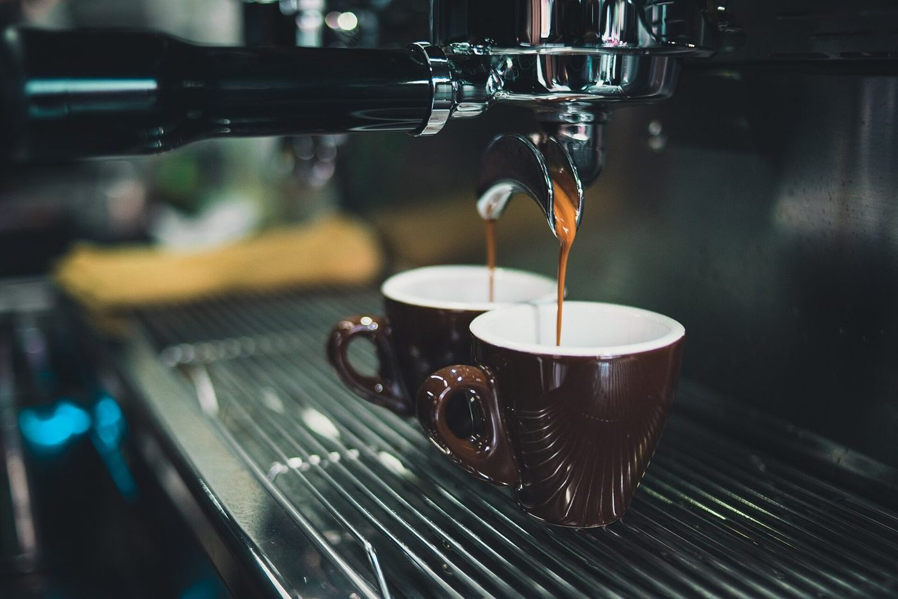

写真帯(イメージ)
コーヒーとパンの写真



写真はイメージです。お店のものではなく、お店で提供している商品を示すものでもありません。
制作側の連想
ネックスピーカーの部位を、配置図にしてみる
このサイトは、首にかけて使うスピーカーを真上から見た図にしたつもりで作りました。六つの部位に番号をふり、上の図と並べています。制作側の連想で、お店の理念・由来とは無関係です。実際の製品の仕様を示すものでもありません。
凡例
六つの部位
- 1スピーカーユニット首の左右に当たる位置に置く、音を出す部分。
- 2ネックバンド左右をつなぐ、U字に曲がった本体の帯。
- 3操作ボタン音量などを操作するための、小さなボタンの並び。
- 4マイク通話のために声を拾う、小さな穴の部分。
- 5充電端子ケーブルをつないで電気を入れる差し込み口。
- 6電源ランプ入り切りの状態を知らせる、小さな点灯部。
ギャラリー(イメージ)
パンとコーヒー豆の写真


写真はイメージです。お店のものではなく、お店で提供している商品を示すものでもありません。
ご案内
お店のこと(確認できたものだけ)
| 所在地 | 〒371-0031 群馬県前橋市下小出町１丁目２８−１８ |
|---|---|
| 電話 | 準備中 |
| 営業時間 | 準備中 |
| 定休日 | 準備中 |
| ご予約 | 準備中 |
| 駐車場 | 準備中 |
| SNS | Instagram @baeckerei_katze |
写真帯(イメージ)
白い背景のクロワッサンと豆


写真はイメージです。お店のものではなく、お店で提供している商品を示すものでもありません。